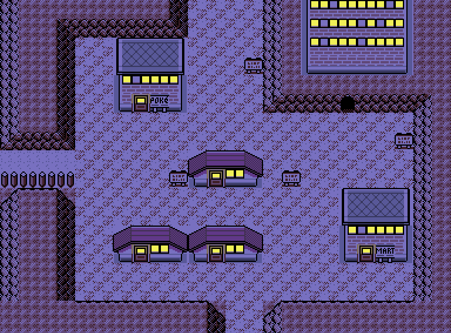

A fabricated illness was dubbed "Lavender Town Syndrome" (as well as "Lavender Town Tone, Lavender
Town Conspiracy, and Lavender Town Suicides") and the original story went viral after being spread
on general interest websites such as 4chan. Various people have added details to make the story more
convincing over time, such as photoshopping images of ghosts and the Pokémon Unown (spelling out the
message "leave now") into spectrogram outputs of the Lavender Town music. Certain versions claim
that the games director, Satoshi Tajiri, wanted the tone in the game to "annoy" children instead of
cause harm, while others claim Nintendo was in collaboration with the Japanese government.

Reception
Jessie Coello of TheGamer described it as "One of the creepiest and most infamous creepypastas in
online fiction." Mark Hill of Kill Screen stated that the appeal of the Lavender Town Syndrome
legend "comes from corrupting such an innocent symbol of childhood." Patricia Hernandez of Kotaku
believed that one of the reasons why the Lavender Town creepypasta "is so effective" is that the
theme tune is "genuinely creepy." She also noted that the suicides taking place in Japan was an
important element in preserving the mystery as fact-checking would require proficiency in Japanese.
Nadia Oxford of Lifewire drew comparisons with "Dennō Senshi Porygon", an episode of the Pokémon
anime series that gave hundreds of Japanese viewers, most of them children, reactions similar to
epilepsy symptoms and sent some into seizures, stating that its fallout "provides a solid bedrock
for the Lavender Town myth." Scott Baird of TheGamer believed that the story was "clearly inspired"
by the event. Matt Rooney of IGN selected it as one of the best video game urban legends.